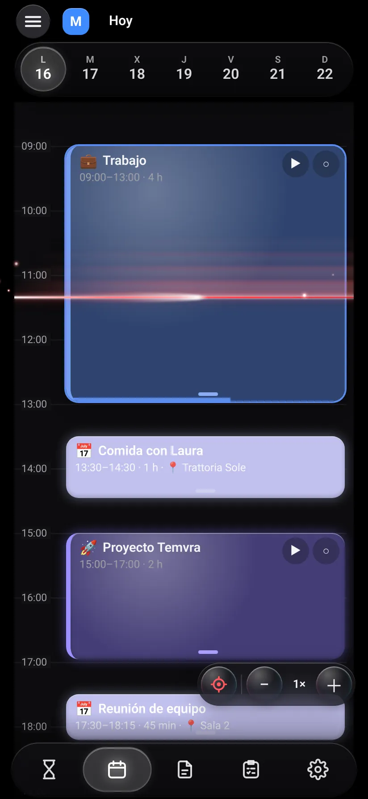
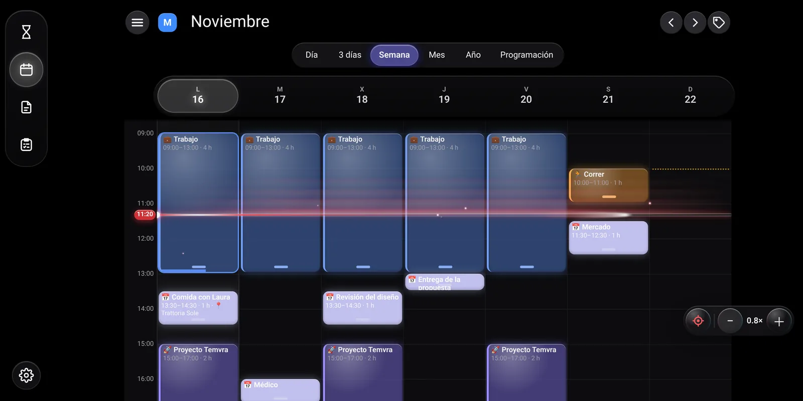
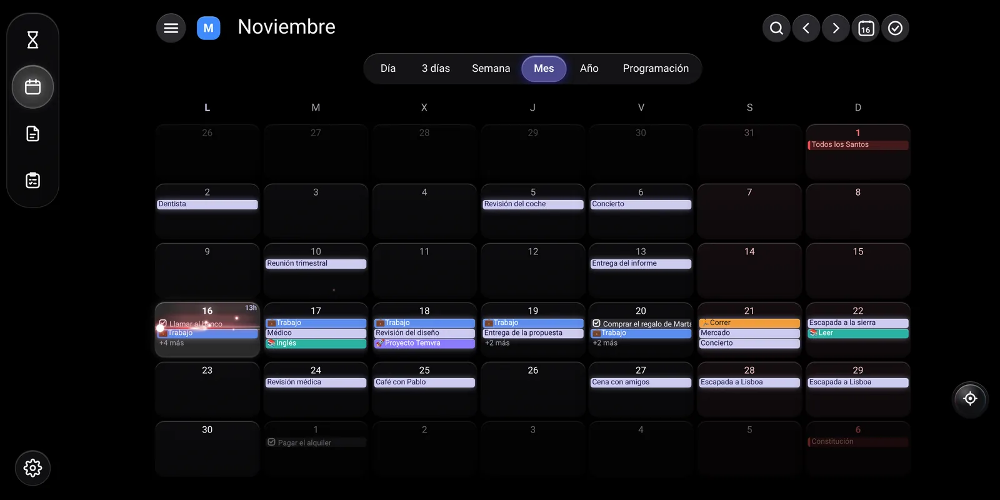
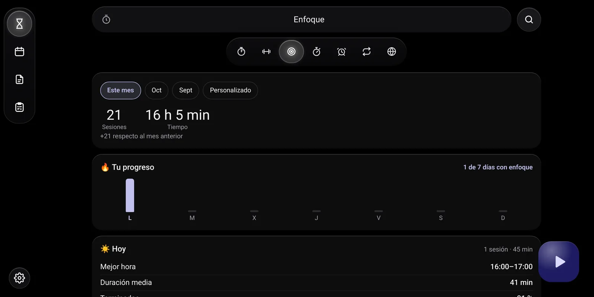
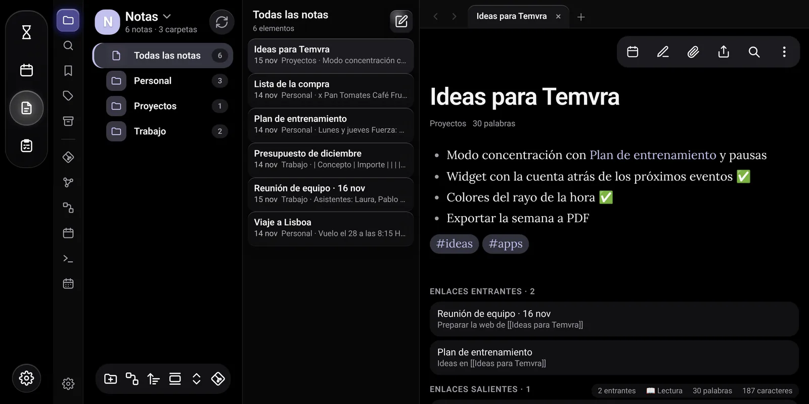
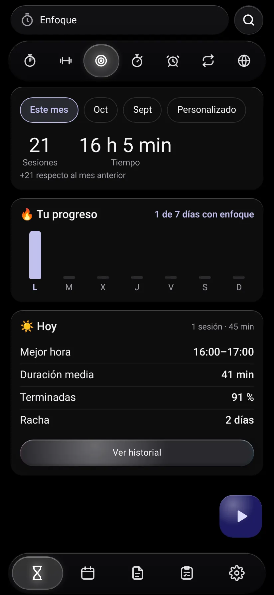
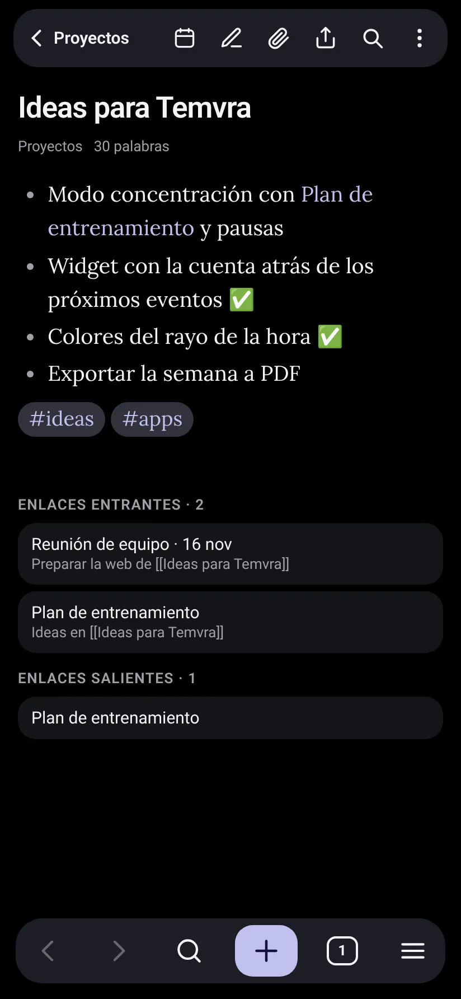

Hoy: 3 bloques y 2 eventos
Planifica
Agenda de día, semana, mes y año, con bloques de trabajo y el rayo de la hora.
Muy pronto en Google Play
Temporizadores, agenda, bloques de trabajo y notas en una sola app. Sin cuentas, sin anuncios y con tus datos en tu móvil.
Gratis y en 10 idiomas




Lo que haces cada día, en la misma app y con el mismo diseño.

Hoy: 3 bloques y 2 eventos
Agenda de día, semana, mes y año, con bloques de trabajo y el rayo de la hora.

Racha de 2 días
Sesiones de Enfoque con cuenta atrás, avisos al empezar y al terminar, y tus estadísticas.

2 notas enlazan aquí
Notas en Markdown enlazadas entre sí, que puedes guardar como archivos .md compatibles con Obsidian.
Los detalles que te ahorran abrir otras cinco apps.
Una línea de luz marca el momento exacto en el que estás. Aquí, ahora, son las 11:20.
La hora con segundos y la cuenta atrás de tus próximos eventos, en la pantalla de inicio.
Intervalos de ejercicio con avisos por voz, para entrenar sin mirar el móvil.
Reparte la jornada en bloques y mira cuánto dedicas a cada cosa.
Los festivos de tu país y los calendarios a los que te suscribas.
Funciona siempre sin conexión. Y si quieres, sincroniza notas, agenda y tiempos con tu propio repositorio de GitHub.
Modo claro y oscuro, el color de la app y el del rayo. Prueba a cambiarlo aquí.
Temvra no tiene servidores que guarden lo que escribes. Todo se queda en tu dispositivo, salvo que tú decidas sincronizarlo con tu propio repositorio de GitHub.
Sin cuentas, sin anuncios y sin rastreo
Temvra la hace Kelestra, un estudio pequeño de España. Sin cuentas que crear, sin anuncios y sin servidores que guarden lo que escribes.
¿Algo más? Escríbenos a hola@temvra.es.
Nada. Temvra es gratis y no tiene anuncios.
No. Temvra funciona sin cuentas y sin conexión. Todo se guarda en tu dispositivo.
Puedes exportar una copia de seguridad desde Ajustes e importarla en el otro móvil, o vincular tu propio repositorio de GitHub para que tus notas, tu agenda y tus tiempos se sincronicen solos.
No. Solo se conecta para lo que actives tú, como sincronizar con tu GitHub o consultar los días festivos.
En móviles y tablets Android y en Chromebooks, desde Google Play.
Escríbenos a hola@temvra.es desde tu cuenta de Google y te invitamos a la prueba de Google Play.
Muy pronto en Google Play
Temvra está en prueba antes de salir para todo el mundo. Escríbenos desde tu cuenta de Google y te mandamos la invitación.